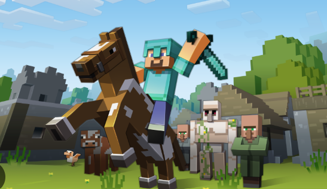
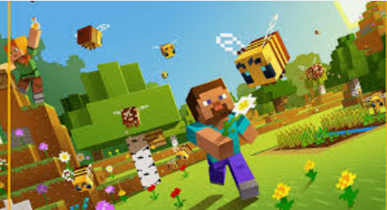

Minecraft is a popular sandbox video game where players explore a blocky, 3D world to gather resources, craft items, and build structures. It has no set goals, allowing players a high degree of freedom in modes like Creative, which provides unlimited resources and the ability to fly, and Survival, where players must gather food and fend off monsters. The core gameplay involves breaking and placing blocks, and the game can be played alone or with others online
 minecraft is the best game and like 100million players play itCore gameplay Build: Craft tools, weapons, and shelters, or create elaborate structures like castles and cities. Explore: Discover mysteries and navigate a procedurally generated, infinite world filled with various materials like dirt, stone, and ores. Survive: In Survival mode, gather resources, manage hunger, and defend against hostile mobs that appear at night.
 Minecraft has two primary, actively maintained versions: Java Edition for Windows, Mac, and Linux, and Bedrock Edition for Windows, consoles (Xbox, PlayStation, Nintendo Switch), and mobile devices. A third version, Minecraft Education, is for educational settings, and a localized version exists for China. While both Java and Bedrock receive regular updates, Bedrock supports cross-platform play, whereas Java does not have this feature.